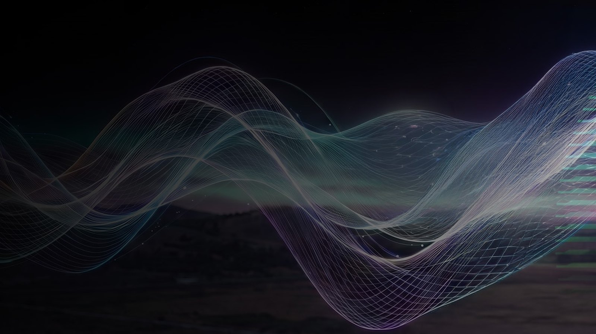

Tagesthema ·
Palo Alto Networks: Wenn KI-Angriffe zum Geschäftsmodell der Verteidiger werden
Erst warnte die US-Regierung vor KI-gesteuerten Angriffen auf die Infrastruktur, dann meldete Palo Alto ein Rekordquartal und hob die Jahresprognose kräftig an. Cybersecurity-Aktien schossen hoch, während der Dow fiel. Was hinter dem Sprung steckt.
Redaktion Vision Universe · Stand 19.11.2026, 06:00 Uhr · 3 Min. Lesezeit

Der Dow verlor am Mittwoch 1,1 Prozent. Cybersecurity-Aktien dagegen hoben ab. Nach unseren Daten schloss Palo Alto Networks 9,9 Prozent höher bei 339,92 Dollar, CrowdStrike gewann 7,9 Prozent, Zscaler 6,8, Fortinet 5,9 und Cloudflare 5,7 Prozent. Noch stärker sprangen kleinere Werte: Tenable plus 15,8 Prozent, Qualys plus 12,9, Okta plus 12,1, SentinelOne plus 10,4.
Den Anstoß gab nicht die Bilanz, die kam erst nach Börsenschluss. Laut TokenPost stiegen die Kurse, nachdem Heimatschutzminister Markwayne Mullin eine Zunahme KI-gesteuerter Cyberangriffe auf die Infrastruktur der USA beschrieben hatte. Am Abend lieferte Palo Alto dann die Zahlen dazu: ein Rekordquartal und eine deutlich höhere Jahresprognose.
Quelle: Vision Universe, Schlusskurse vom 18.11.2026
Das Rekordquartal
Im ersten Geschäftsquartal bis Ende Oktober wuchs der Umsatz um 39 Prozent auf 3,44 Milliarden Dollar. Laut Motley Fool hatten Analysten 3,31 Milliarden erwartet. Noch schneller wächst das, was Palo Alto selbst als wichtigste Kennzahl sieht: der wiederkehrende Jahresumsatz mit den neuen Sicherheitsplattformen, kurz NGS ARR. Er stieg um 66 Prozent auf 9,73 Milliarden Dollar. Die vertraglich zugesicherten, aber noch nicht gebuchten Umsätze legten um 35 Prozent auf 21 Milliarden zu.
Der bereinigte Gewinn je Aktie lag bei 1,05 Dollar, nach den offiziellen Rechnungslegungsregeln bei 0,57 Dollar. Aus dem Geschäft flossen 1,9 Milliarden Dollar frei zu, mehr als die Hälfte des Umsatzes.
Quelle: Palo Alto Networks, Quartalsmitteilung vom 18.11.2026
Prognose rauf, Übernahme drauf
„Angesichts der aktuellen Bedrohungslage und der Nachfrage, die wir vor uns sehen, heben wir unsere Jahresprognose deutlich an“, sagte Finanzchef Dipak Golechha (übersetzt). Für das Geschäftsjahr bis Juli 2027 erwartet Palo Alto jetzt 14,52 bis 14,57 Milliarden Dollar Umsatz, 26 bis 27 Prozent mehr als im Vorjahr, und einen bereinigten Gewinn je Aktie von 4,26 bis 4,30 Dollar.
Dazu kommt eine Überraschung: Palo Alto kauft für 4,5 Milliarden Dollar in Aktien das KI-Unternehmen Applied Compute, das Firmen hilft, offene KI-Modelle auf eigene Daten anzupassen und zu betreiben. Die Idee: Unternehmen werden eine Mischung aus offenen und geschlossenen Modellen nutzen, und jedes davon muss abgesichert werden. Palo Alto will dafür der Anbieter sein. Der Abschluss ist für das dritte Geschäftsquartal geplant.

„Während KI die Bedrohungslage verändert, müssen wir uns ständig weiterentwickeln, um unsere Kunden zu schützen.“
Nikesh Arora, Vorstandschef von Palo Alto Networks, in der Quartalsmitteilung vom 18.11.2026 (übersetzt)
Warum KI die Verteidiger stärkt
Die Logik dahinter ist einfach und unbequem: Je besser KI-Modelle Schwachstellen finden und ausnutzen können, desto mehr müssen Unternehmen in Abwehr investieren, oft ebenfalls mit KI. Selbst die KI-Entwickler beschreiben das offen. Anthropic, das laut Berichten am Donnerstag an die Börse geht, nennt Cybersicherheit in seinem Prospekt eine seiner wichtigsten kurzfristigen Chancen und räumt zugleich ein, dass seine Modelle schon für Angriffe missbraucht wurden.
Für Anbieter wie Palo Alto ist das Rückenwind, aber auch eine Herausforderung: Wenn KI-Labore selbst Werkzeuge zum Aufspüren von Lücken verkaufen, entsteht neue Konkurrenz. Palo Alto antwortet darauf mit Zukäufen wie Applied Compute und eigenen KI-Modellen.
Was unsere Daten zeigen
Trotz des Sprungs liegt Palo Alto nach unseren Daten rund 21 Prozent unter dem Hoch der letzten zwölf Monate und 144 Prozent über dem Tief. Über zwölf Monate steht ein Plus von rund 68 Prozent. Der Umsatz der letzten vier gemeldeten Quartale wuchs um 25 Prozent. Auffällig ist die Bewertung: Weil der Gewinn nach Rechnungslegungsregeln zuletzt klein war, liegt das Kurs-Gewinn-Verhältnis auf dieser Basis sehr hoch. Die Kacheln und App-Ansichten zeigen Kurs, Geschäftszahlen und was große Fonds gemeldet haben.
Worauf es jetzt ankommt
Am Donnerstag zeigt der erste volle Handelstag nach den Zahlen, ob der Sprung hält. Laut CNBC legte die Aktie nachbörslich um rund 7 Prozent zu. Und mit dem ersten Handelstag von Anthropic rückt die Frage in den Mittelpunkt, wie viel vom Geschäft mit KI-Sicherheit bei den klassischen Anbietern bleibt.
Termine
- 19.11.2026Erster Handelstag nach den Zahlen; Börsenstart von Anthropic (laut Berichten)
- 3. Geschäftsquartal 2027Palo Alto: geplanter Abschluss der Übernahme von Applied Compute
Quellen
- Palo Alto Networks (SEC-Meldung, Form 8-K): Palo Alto Networks Reports Fiscal First Quarter 2027 Financial Results, 18.11.2026
- Palo Alto Networks (SEC-Meldung, Form 8-K): Palo Alto Networks to Acquire Applied Compute, Bringing Secure Open-Weight AI to the Enterprise, 18.11.2026
- TokenPost: Palo Alto Networks Shares Rise With Cybersecurity Stocks on Nov. 18, 18.11.2026
- The Motley Fool: Palo Alto Networks: Accelerating Growth and a $4.5 Billion Bet on the Future of Cybersecurity, 18.11.2026
- CNBC: Stocks making the biggest moves Wednesday: Palo Alto Networks, Everpure, CrowdStrike & more, 18.11.2026
Zitate aus englischen Quellen sind übersetzt. Kurse, Kennzahlen und Fondsdaten im Kasten stammen aus Vision Universe (Stand siehe Kasten). Angabe Dritter: zusammengefasste Einschätzungen externer Analysten bzw. Pflichtmeldungen an die SEC, unverändert mit Quelle und Datum. Nicht von Vision Universe erstellt und keine Einschätzung von Vision Universe. Dieser Artikel wurde automatisch erstellt und vor der Veröffentlichung gegen die genannten Quellen geprüft.
Vision Universe
Diese Aktie mit allen Zahlen
Kurs, Bewertung, Geschäftszahlen, Chart und was große Fonds tun: In Vision Universe steht zu jeder Aktie dieselbe Analyse, auf der dieser Artikel aufbaut.
Artikel in Vision Universe öffnen→ Zum Start der App benachrichtigen